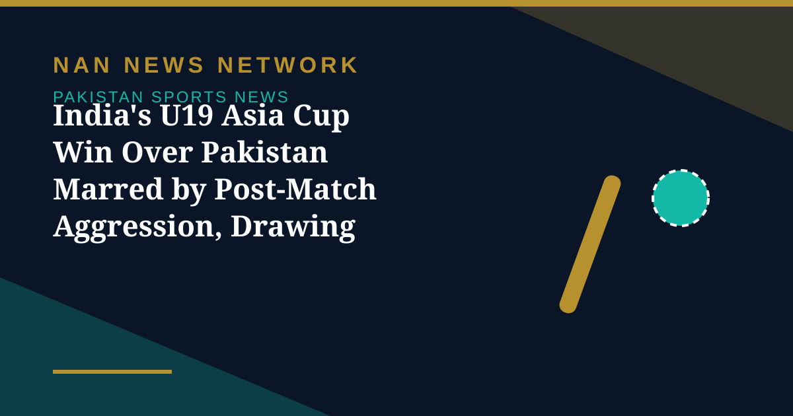

India's U19 Asia Cup Win Over Pakistan Marred by Post-Match Aggression, Drawing Condemnation

India have beaten Pakistan by one wicket in a nail-biting final of cricket's Under-19 Asia Cup in Oman, but the comeback win was overshadowed by an on-field display of aggression and heated outbursts from the winning side, Al Jazeera reported on November 15.
Ugly scenes after a thrilling finish
The thrilling final on Saturday swayed between the two South Asian rivals before India scripted a last-ball win at the Oman Academy Cricket Ground in Al Amerat on the outskirts of the capital, Muscat. The winning side's post-match celebrations quickly took an ugly turn as the players seemed to target Pakistan's players with aggressive gestures that were later condemned by former cricketers. One Indian player was seen yelling and gesticulating angrily in the face of Pakistan wicketkeeper Hamza Zahoor, who did not respond to the aggression. Former Pakistan cricket captain Mohammad Yousuf emphasised the weight players carry when they step onto the pitch.
The match itself
Facing a steep target of 338 in the 50-over match, India staged a remarkable turnaround after slipping to 252-8 in the 42nd over as Manal Chauhan and Mohit Ulva rescued the run chase with a vital late partnership. Pakistan posted 337-9 after winning the toss and electing to bat, with opener Usman Khan leading the scoring with 107 off 111 balls while Abdul Qadir made 80 and captain Farhan Yousaf scored 63. Chauhan's 47 from 32 balls revived India's chase while Ulva guided India home with an unbeaten 49 off 26 deliveries and was the final-ball hero, hitting a boundary when three runs were required to win. The triumph gave India a record-extending ninth U19 Asia Cup title and their first one since 2021. Aaryavir Sehwag, who made 58 in the final, finished as the tournament's leading run-scorer with 361 runs in five innings and was named player of the tournament. Former Pakistan pacer Tanvir Ahmed, meanwhile, lashed out at the Pakistan Cricket Board and its system after the defeat, blaming the board for the loss.
Sources: Al Jazeera, November 15, 2026; NDTV Sports, November 15, 2026
More on Pakistan Sports News
- Netherlands Beat Pakistan Women by Eight Wickets; Zimbabwe Clash Now Must-Win
- India Edge Pakistan by One Wicket Off the Last Ball to Win U19 Asia Cup Final
- Pakistan and Sri Lanka Head to Decider in Rawalpindi as Second Test Starts November 17
- Saud Shakeel's Fighting 97 Saves Pakistan as Rain-Hit Rawalpindi Test Against Sri Lanka Ends in a Draw
- Pakistan Face India in U19 Asia Cup Final on Saturday as Defending Champions Chase Back-to-Back Titles
- Debutant Saqib Khan Takes Seven Wickets as Pakistan Fight Back Against Sri Lanka in Rawalpindi Test
- Pakistan Crush Bangladesh by Nine Wickets to Reach U19 Asia Cup Final
- De Silva and Kusal Mendis Hit Centuries as Sri Lanka Reach 404-4 on Day Three
- Pakistan Hockey Begins Joint Camp for Sultan Azlan Shah Cup in Malaysia
- Pakistan Declare on 434 as Saud Hits 93 and Debutant Saqib Strikes Twice Against Sri Lanka
- Shahid Afridi Leads Recruitment Drive for New NBP Hockey Team
- Debutants Tayyab and Taha Hit Fifties as Pakistan Dominate Day One Against Sri Lanka
- Babar Azam Equals Record for Most 50-Plus Scores by a Pakistan Captain
- Babar Azam Says Revamped Pakistan Ready to Fight Sri Lanka in Rawalpindi Test
- Pakistan Beat Maldives 3-0 for First SAFF Championship Win in Eight Years
- Pakistan Add Four Players to Test Squad for Sri Lanka Series as Three Earn Maiden Call-Ups
- Pakistan Crowned Champions of 23rd Asian Team Squash Championship After Beating South Korea 2-0
- FATA Thrash Lahore Whites by 241 Runs as Babar Smashes Bat After Another Failure
- Pakistan Turn to Sri Lanka Tests on November 9 With Babar's Form the Big Question
- Huraira and Farooq Hit Centuries as Sialkot and FATA Take Control on Day Three of Quaid-e-Azam Trophy Gold
- Peshawar Whites Complete Five-Wicket Comeback as Abbottabad and AJK Also Win on Day Three of Quaid-e-Azam Trophy Silver
- Rizwan's Unbeaten Double Century Puts Peshawar in Command Against Faisalabad
- Babar Azam's Controversial Dismissal Sparks DRS Row in Quaid-e-Azam Trophy
- Abdul Samad to Lead Pakistan Shaheens at Asia Cup Rising Stars 2026 in Qatar
- Babar and Shaheen Headline Quaid-e-Azam Trophy Opening Round as 69th Edition Begins
- Pakistan Fined for Slow Over-Rate in Tri-Series Final Despite Title Win
- After the Tri-Series Triumph, Pakistan Turn to Tests Against Sri Lanka on November 9
- Fakhar Zaman's 127 Powers Pakistan to Tri-Series Title in Record-Equalling 326 Chase
- Abbas Afridi's 73 Off 16 Balls Seals Hong Kong Sixes Plate Title for Pakistan
- Sri Lanka Set Pakistan 326 to Win the ODI Tri-Series Final in Lahore
- Pakistan Beat Hong Kong to Reach Hong Kong Sixes Plate Final Against Oman
- Pakistan Thrash India by Four Wickets at Hong Kong Sixes, Chasing 89 in 3.5 Overs
- Aamer Jamal's 7-32 and Fifty Lead Markhor to President's Trophy Final Win
- England Meet Sri Lanka in Lahore as Tri-Series Builds to October 31 Final
- Pakistan Beat Hong Kong in Padel Qualifier but Miss Out on World Cup
- Sri Lanka Crush Pakistan by Eight Wickets to Reach Tri-Series Final
- Haris Rauf Fined 20% of Match Fee, Nears Suspension After ICC Code Breach
- Pakistan Begin Hong Kong Sixes Title Defence Under Abbas Afridi
- Malaysia Edge Pakistan on Penalties to Win Sultan of Johor Cup
- Saim Ayub Released from ODI Squad as Sahibzada Farhan Named Replacement
- Egyptians Sweep Both Titles at Karachi Venus Squash Open
- Shadab Khan's Unbeaten 113 Lifts Pakistan Past England in One-Wicket Tri-Series Thriller
- Babar Azam to Lead New-Look Pakistan Test Squad Against Sri Lanka
- Pakistan's Pink Day: Green Shirts Wear Pink Against England for Breast Cancer Awareness